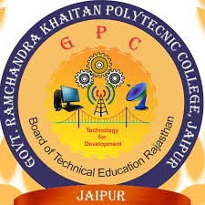

Computer science & Engineering students deal with hardware and software in which students learn the programming languages for application software, client and server side programming, website development, network and information security.
State and central government jobs such as Information Assistant by DOIT, Govt. of Rajasthan, Tax assistant, Computer operator, Data Entry operator and Technician in various government department
Private Job: Software companies
Many diploma holders pursue higher studies such as B.Tech (Second Year), BSc in Computer Science and BCA
Computer science/IT employment prospects in the near and long term and broadly seems positive and encouraging for the future
Architecture is the art and science of building design that develop the concepts for structure and turn those concepts into reality.
State Government departments like JDA, DLB, Nagar Nigam recruits diploma holders as Town planning assistant, Senior draftsman.
Private Jobs- in Companies, Draftsman,
Map Preparation, Site supervision,3D modeling
Land division, conversion
Railways: DRAFTSMAN
Mining, Air port Authority, Naval /Marine Architecture, MES as Draftsman
Council of architecture awards B.Arch. Degree to candidates after successful practice of 10 years under any registered practicing Architec
Civil Engineering deals with the planning, designing, construction of man made structures including works like roads, bridges, canals ,dams and buildings.
State Government departments like PWD, PHED, Water Resource Department, Irrigation, Agriculture Marketing Board, Local self bodies, Highways Panchayati Raj offers Junior Engineer post to our Diploma pass out students
Private Sector companies offer site engineer /engineer post at their offices and Sites.
Central Government jobs- Railways, Highways
The demand for skilled Civil Engineers will never slow down globally as infrastructure projects will keep on increasing and will never be stagnan
Electronics branch is a discipline that provides hardware and software solutions by incorporating electronics circuits, micro processor/ micro controllers and also provides communication, interface, controls of various machineries.
Serve as a Technician, JEN
Tele communications industries
Transport and Aviation
Space Exploration
Environmental Monitoring
Security and Information
Automobile industries as DET
Mechanical Engineering is a discipline concerned with design, development of industrial machinery, motor vehicles, aircrafts, and manufacturing units.
Automotive Industry-Maruti
Manufacturing industries
Many diploma holders pursue higher studies such as B.Tech (Second Year).
Government Sector Jobs-RTO inspector/PWD/PHED/Water Resource Department as J.En
Private Sector Jobs- as DET
Energy & Utilities
Production engineering is the discipline concerned with planning, designing, developing, managing various processes to produce high quality products. It is a combination of manufacturing technology and management science.
Private Sector Jobs- as DET in various sectors
Manufacturing sector
Many diploma holders pursue higher studies such as B.Tech (Second Year).
Government Sector- railways
Production Engineer